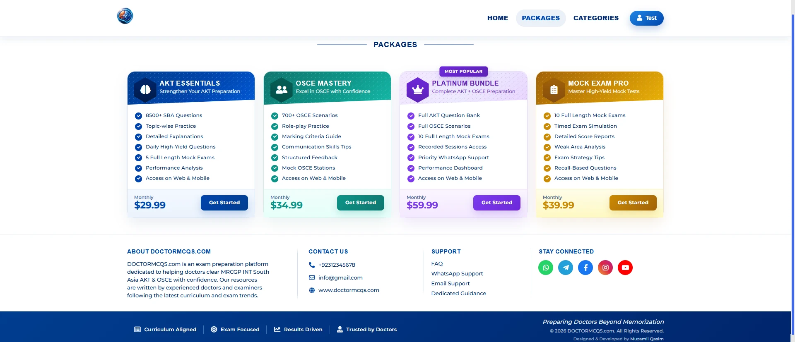
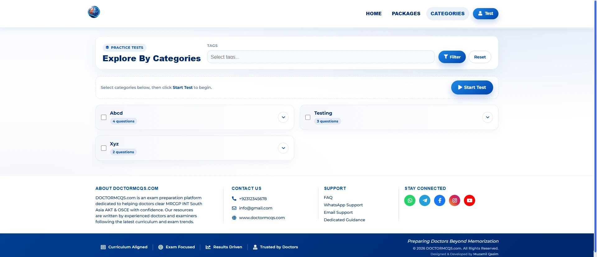
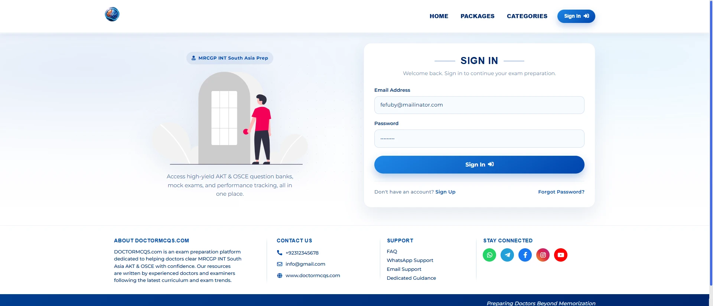
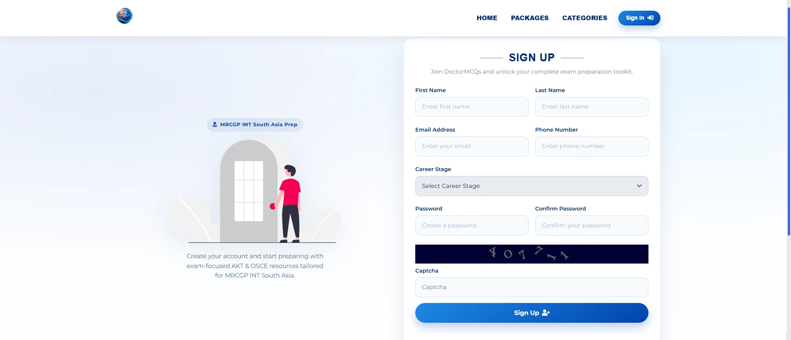
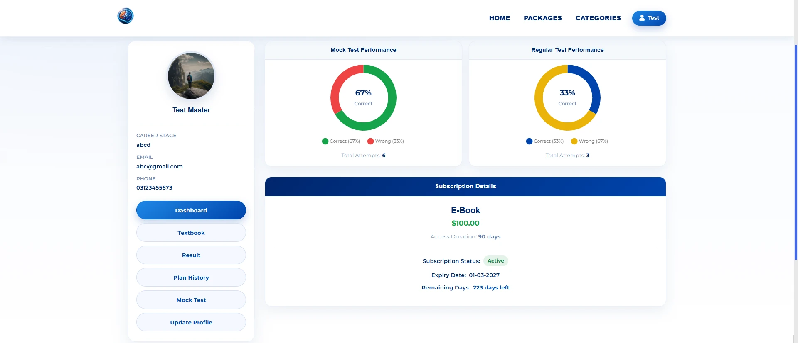
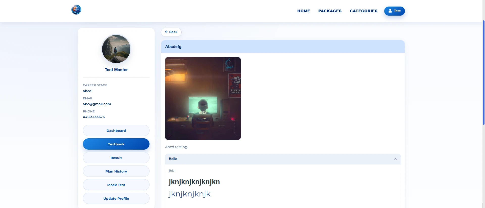
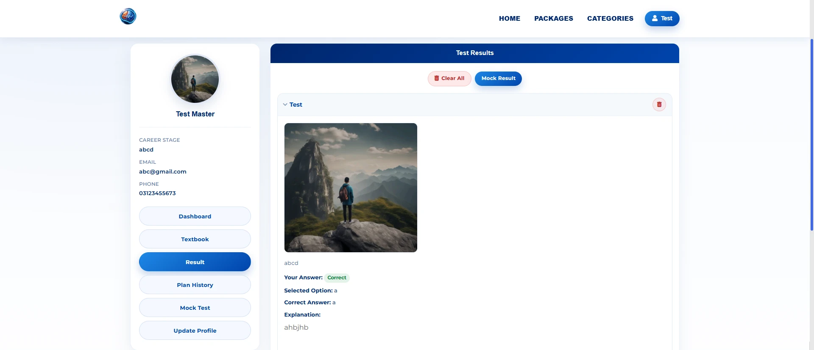
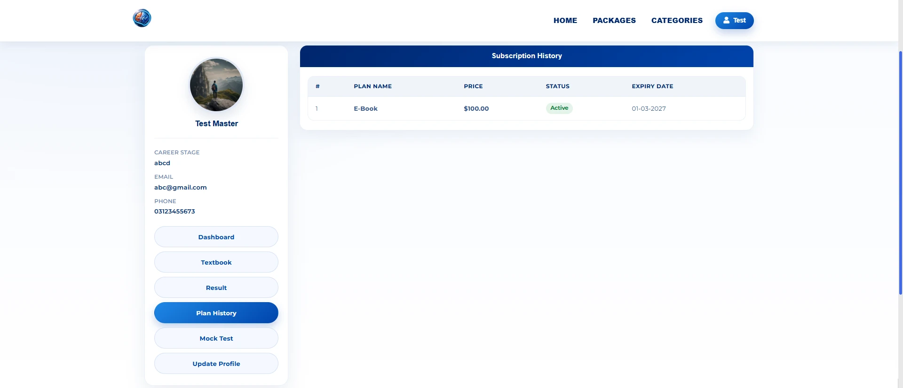
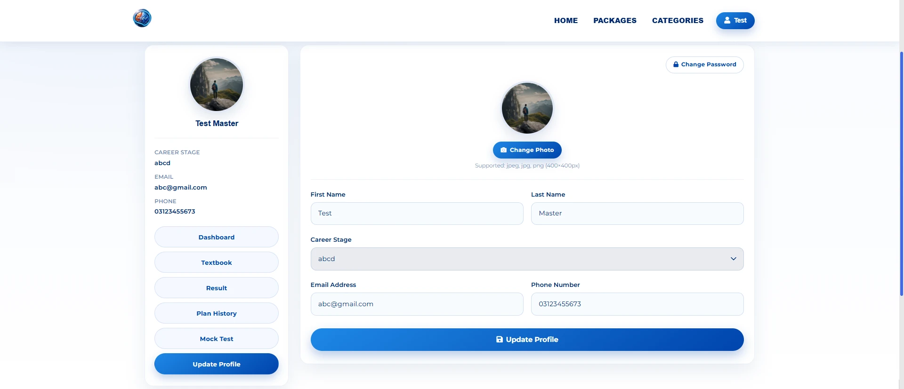
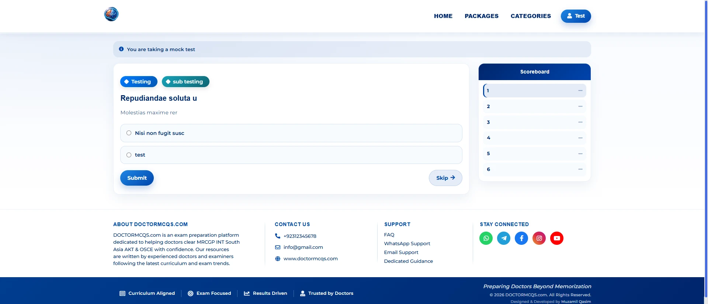
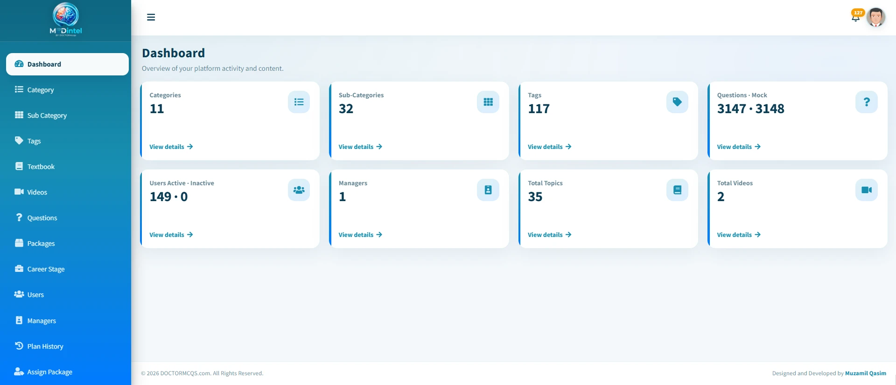
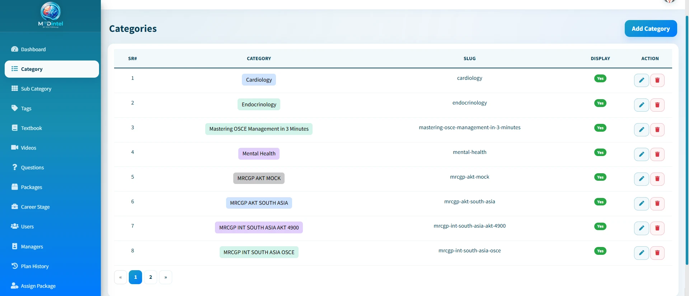
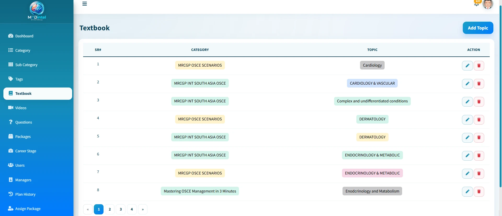
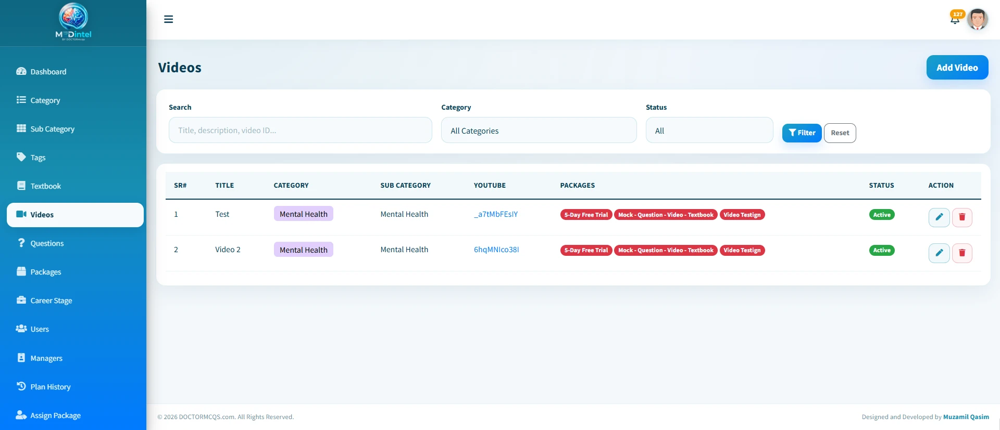
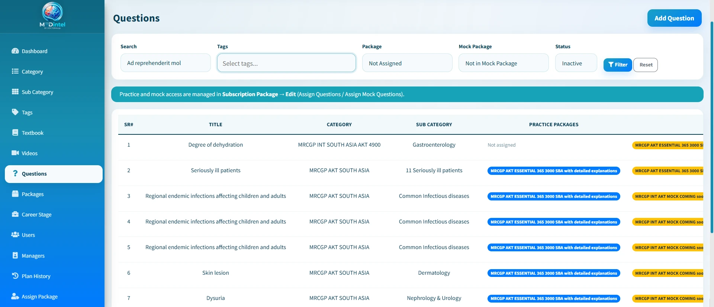
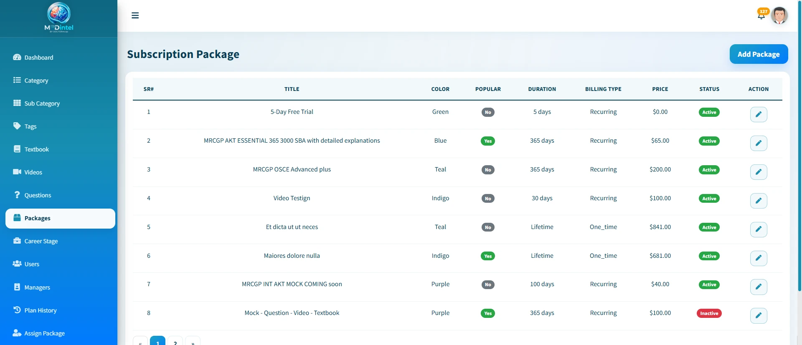
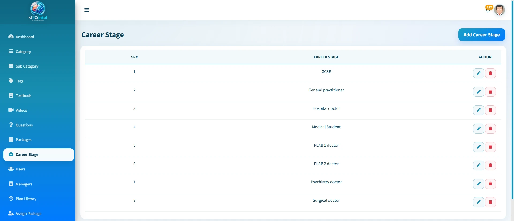
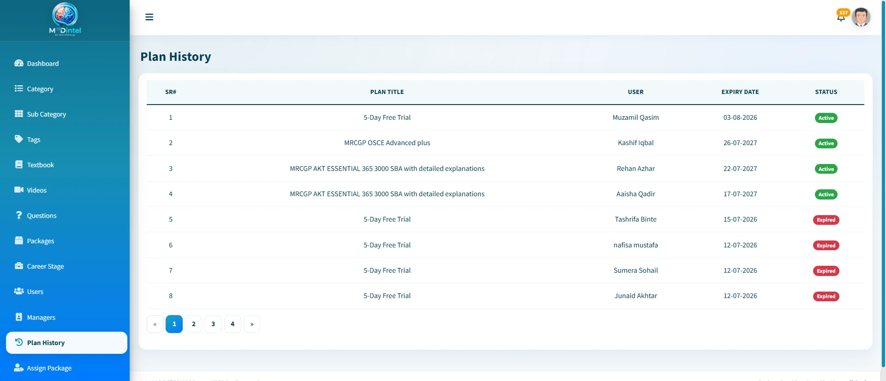
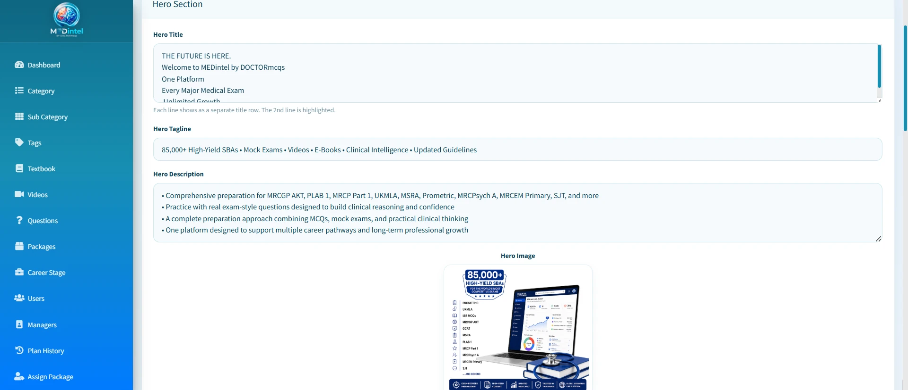
Overview
About This Project
Doctor MCQs is an online medical exam preparation platform built for doctors preparing for MRCGP INT South Asia AKT & OSCE exams. It offers high-yield MCQs, timed mock tests, OSCE scenarios, eBooks, and recorded sessions, all aligned with the latest curriculum and guidelines in one student-focused learning hub.
Highlights
Key Features
- Secure student registration and login
- Large MCQ / SBA question bank with detailed explanations
- Timed mock tests with real exam-style interface
- OSCE scenarios for clinical exam practice
- eBooks and study resources for flexible learning
- Recorded sessions and on-demand video lessons
- Curriculum-aligned content with latest guidelines (NICE, WHO & local)
- Category-wise packages and exam-focused study plans
- Progress tracking and result insights
- Fully responsive design for web and mobile access
- Admin panel for managing questions, packages, and content
Designed and Developed by Shahid Rasheed